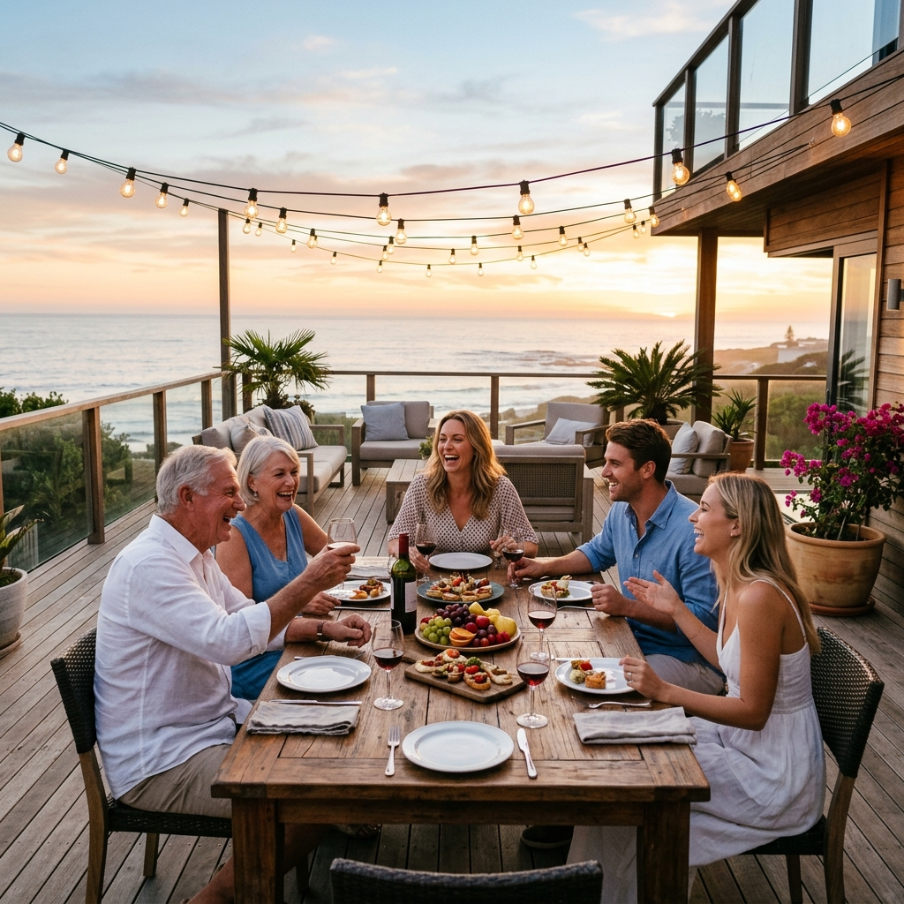

We've helped a lot of families make this exact move.
Most of the "moving to Gulf Shores" content online is written by people who don't live here. They write "10 reasons to retire to the beach" and never mention what an actual property tax bill looks like, why insurance is the conversation that breaks deals, or which neighborhoods feed which schools.
We got tired of repeating the same answers in every initial call, so we wrote them all down. The result is the 17-page guide you're reading right now — the same document we send every serious out-of-state buyer before they ever fly in for a tour.

What this guide covers
Quick-answers to the most-asked questions. The financial reality (taxes, insurance, the Fortified program). Featured neighborhoods. Schools and the new Gulf Shores High School. Beaches, parks, boating, fishing, dining, daily life. Public safety. Hurricane and weather honesty. The 12-month relocation timeline.
What it deliberately doesn't cover
"10 reasons" filler, vague lifestyle prose, anything we can't back up with a number, address, or recent transaction. If you want a brochure, our website has photos. This is the document for serious buyers.